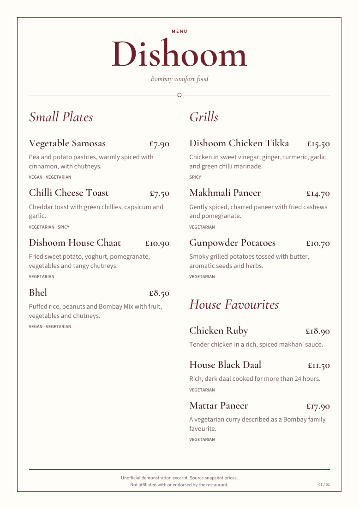
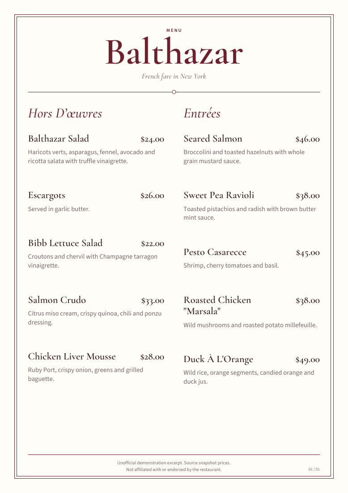
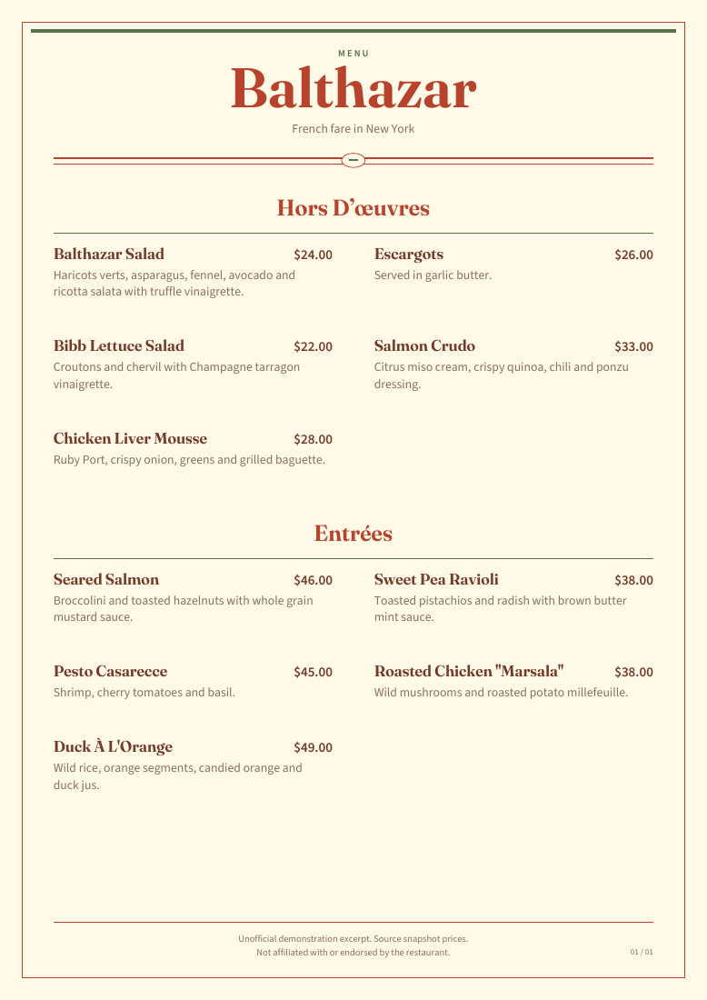
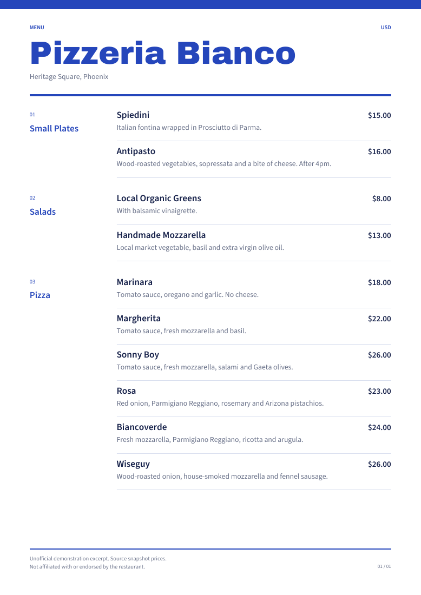
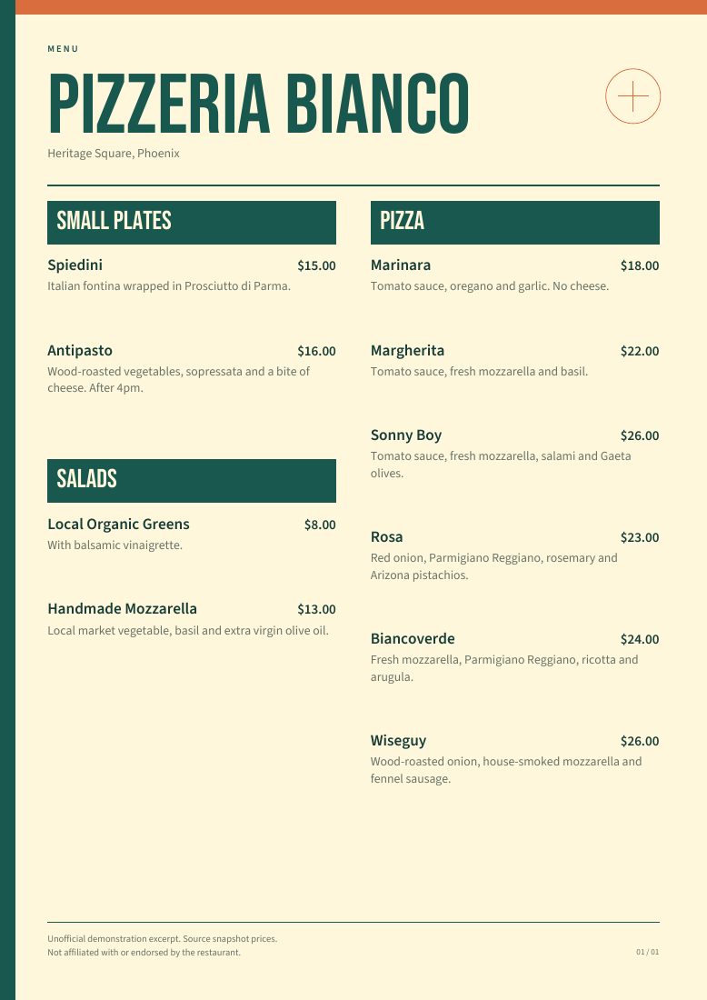

Three restaurant excerpts, twelve editable compositions. These previews are rendered from the real selectable PDFs. Open a PDF to inspect the type, spacing and prices. Download its backup to continue editing in the studio.




